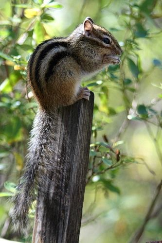
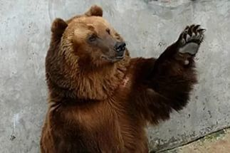
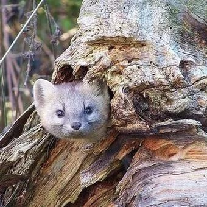
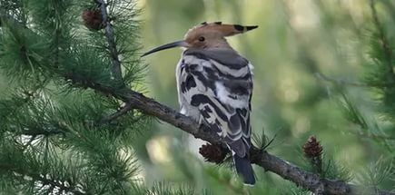
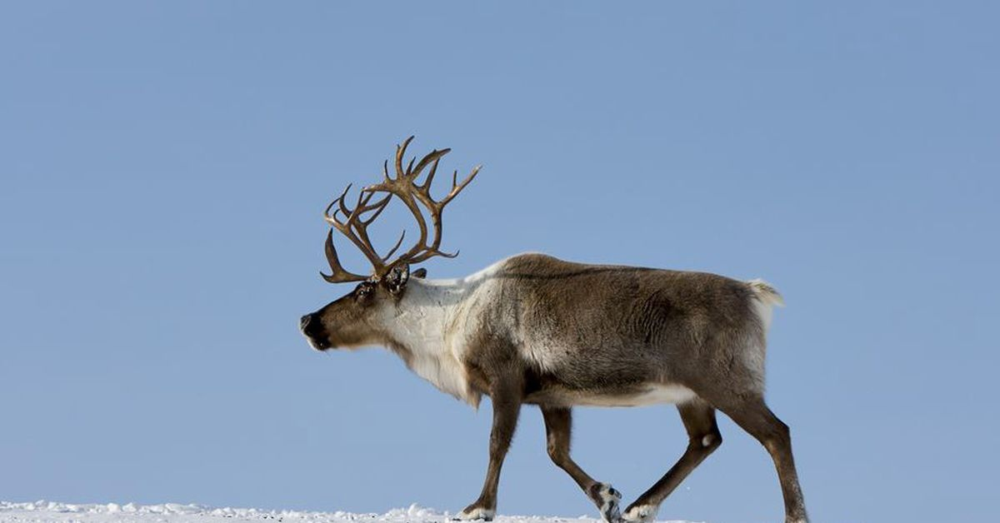
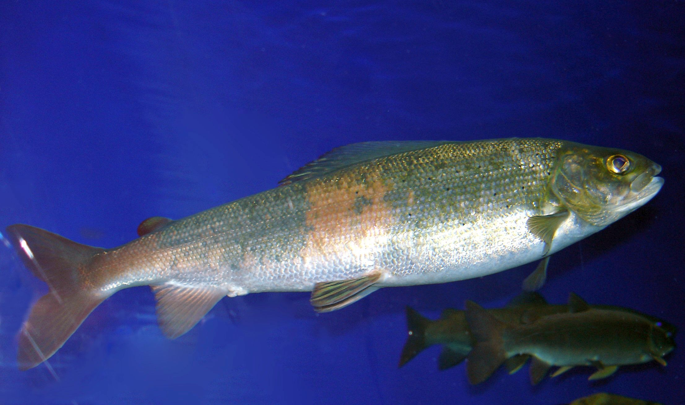
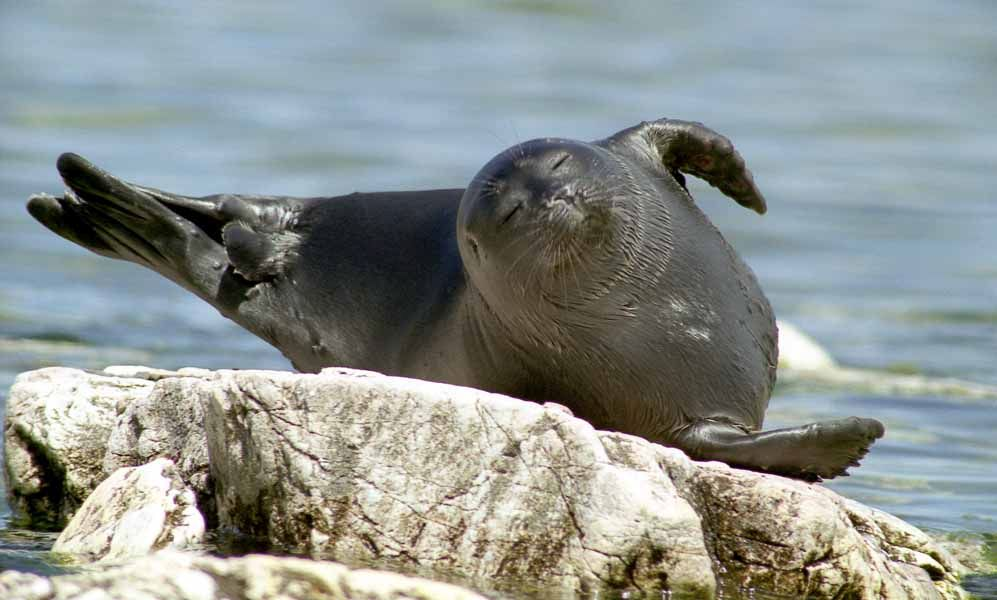
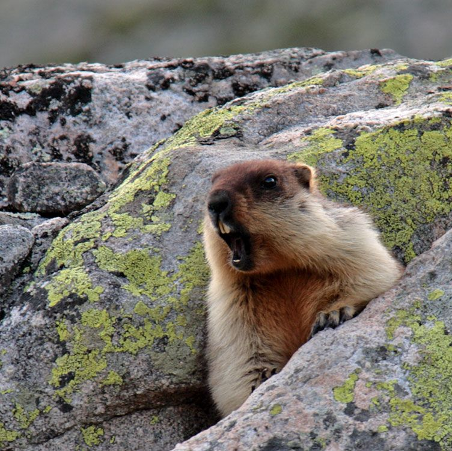

Фауна Иркутской области
Иркутский край отличается хорошей экологией и богатым растительностью. И хотя климат в этой области достаточно суровый, всё же территорию населяют интересные и главное редкие виды животных. Самое главное озеро – Байкал, которое может похвастаться широким разнообразием рыб, всего примерно 45 видов. Велика и численность птиц, среди популярных здесь встречаются огари, чайки, орланы, скопы и крохали. Примечательно, что в горной местности водится редкий вид зверей – кабарга. Он является самым маленьким оленем в мире. Область характеризуется глубокими водоёмами, горными массивами и холмистыми хребтами.
На территории области можно встретить свыше 300 видов птиц, 75 видов млекопитающих, а также около 65 видов рыб. При этом 70 видов животных признаны редчайшими. В таёжных районах чаще всего встречаются такие животные как северный олень, косули, кабан и лось. Из хищных животных область населяют рысь, росомаха, лисица, волк и даже соболь.
Одним из крупных представителей области является бурый медведь. Гораздо реже в краях встречается сибирский горный козёл. Их численность становится всё меньше и меньше с каждым годом. Самые редкие обитатели Иркутских краёв: нерпа, тюлень. В озере Байкал обитает редчайшая рыба голомянка, которой нигде больше нет. Крупная рыба озера – осетр, но кроме неё ещё часто встречаются таймень и налим.
Есть и другие, не менее уникальные представители животного мира. Например, на территории Иркутской области водятся кабаны, дикая свинья, ласка. Из птиц наиболее популярные: глухарь, тетерев, рябчик. Уникальные виды птиц: клест, оляпка, кедровка и даже даурская (бородатая) куропатка. Среди более крупных животных Иркутской области можно выделить также зайца-беляка, редкого изюбра, белку, безрогого оленя кабарга и снежного барана. Населяет территорию и летяги.
На территории области можно встретить свыше 300 видов птиц, 75 видов млекопитающих, а также около 65 видов рыб. При этом 70 видов животных признаны редчайшими. В таёжных районах чаще всего встречаются такие животные как северный олень, косули, кабан и лось. Из хищных животных область населяют рысь, росомаха, лисица, волк и даже соболь.
Одним из крупных представителей области является бурый медведь. Гораздо реже в краях встречается сибирский горный козёл. Их численность становится всё меньше и меньше с каждым годом. Самые редкие обитатели Иркутских краёв: нерпа, тюлень. В озере Байкал обитает редчайшая рыба голомянка, которой нигде больше нет. Крупная рыба озера – осетр, но кроме неё ещё часто встречаются таймень и налим.
Есть и другие, не менее уникальные представители животного мира. Например, на территории Иркутской области водятся кабаны, дикая свинья, ласка. Из птиц наиболее популярные: глухарь, тетерев, рябчик. Уникальные виды птиц: клест, оляпка, кедровка и даже даурская (бородатая) куропатка. Среди более крупных животных Иркутской области можно выделить также зайца-беляка, редкого изюбра, белку, безрогого оленя кабарга и снежного барана. Населяет территорию и летяги.









Список литературы
- Бояркин В.М., Бояркин И.В. География Иркутской области
- www.megairk.ru